RoyaleViser guide¶


Watch a Clash Royale battle play out, one step at a time, in a window on your own machine.
It opens three kinds of thing: a recording of a real match, a battle saved to a file by the engine, or a bot that is training right now in another program.
Try it · What it does · Save a picture · The rest of the stack · Status · Community
You can try this one without building the engine: clone it, install one package, run one command. You do not need any game files either. Jump to Try it.
Every command on this page is for Windows PowerShell, one per line. Paste them one at a time
rather than as a block. PowerShell cannot chain commands with &&, and a pasted # comment is
not a comment in cmd. On macOS and Linux the interpreter is .venv/bin/python, paths use
forward slashes, cp replaces Copy-Item, and export X=Y sets a variable. Where a line differs
in any other way, its macOS and Linux form is given beside it.
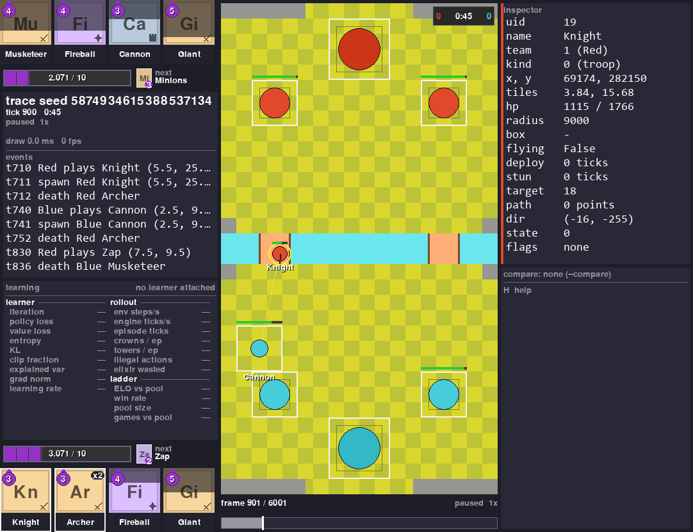
That is a battle the engine played against itself, saved to a file and reopened here. On the left you get both players' hands, their elixir to a thousandth, the next card and a running log of what happened. On the right you get every single thing the file knows about the Blue Valkyrie that was clicked. The bar underneath scrubs through the replay.
The point of the viewer is simple. You can see what your bot did instead of guessing it from numbers. And you can lay two sources of one battle over each other and see the ticks where they disagree.
It draws one picture per tick. A tick is the game's own 50 ms step, so 20 of them go by every second.
It always runs as its own separate program. Your training run never waits for it. When nobody is watching, it costs your training run almost nothing.
Try it¶
Installed with pip install "royalegym[all]"? You already have royaleviser. Skip
Setup: it is only for working on the viewer itself.
The install gives you a royaleviser command. It opens three ways:
royaleviseron its own waits for a training run on127.0.0.1:9870and shows it live.royaleviser FILEopens a saved battle (.msgpack,.json,.jsonlor.jsonl.gz).royaleviser FOLDERopens the newest saved battle anywhere in that folder.
python -m royaleviser is the same program. The examples below use it, so they also work
straight from a clone.
The rest of this section uses files that only a clone of this repo has. Two recordings of the same scripted battle, one from each player's point of view, are committed with the tests. They are about 20 KB each, so they came down with your clone.
You need the shared virtual environment from Setup and this one package installed.
Nothing else. No engine build, no game files, no recordings of your own. Then move into the
RoyaleViser folder with cd RoyaleViser and run this one command:
..\.venv\Scripts\python -m royaleviser tests\fixtures\frames-synthetic-A.jsonl.gz --compare tests\fixtures\frames-synthetic-B.jsonl.gz --speed 4 --seconds 8
A window opens and plays the battle at 4x speed. On a computer with no screen, such as a Linux server, no window appears and nothing tells you so. The end of this section shows how to run it there.
The second recording is drawn on top of the first as hollow ghosts. Nothing differs between
these two recordings, so the ghosts sit exactly on the units and never step off. The compare
panel finishes at 395 ticks compared, 0 differ, under a GAME OVER Blue wins banner.
That battle is a script, not something the engine played. One frame of the recording stands for six ticks of the script, so the units move at six times their scripted speed. It is an honest look at the window and a poor look at how the engine plays.
After eight seconds the program closes itself and prints how many pictures it drew and how long they took. This is one run on the machine this page was written on (2026-09-21):
That is 290 pictures at 4.08 ms each on average. A replay needs 20 a second, so that machine had a lot of room to spare. The 370 ms is the very first draw, which builds the board and loads the fonts.
Your numbers will differ. They depend on your machine and on what else it is running. On 2026-09-28, on a machine with a training run busy on every core, five runs of this command with no window drew between 15 and 143 pictures.
Drop --seconds and the window stays open until you close it.
The same command opens the other kinds of source. One of them at a time, not all three.
The three lines below, and the other bare python lines on this page, assume the venv is active:
..\.venv\Scripts\Activate.ps1 in PowerShell, source ../.venv/bin/activate on macOS and Linux,
from the RoyaleViser folder. Without it, python is your system Python and the error names a
missing package such as pygame or msgspec. If PowerShell refuses to run Activate.ps1, write the
venv's python by path instead: ..\.venv\Scripts\python.
A recording of a real battle. Real recordings come from RoyaleLive, which is private, so your
clone has none. The two scripted recordings in tests/fixtures open this way, and so does a
recording of your own in the format
docs/internals.md describes.
frames-my-match.jsonl.gz stands for your file's name:
A trace saved from the engine, opened at tick 900. This one needs RoyaleGym, from the rest of
Setup. battle.msgpack is the file the program in
Saving a battle to a file writes, in the folder you ran that
program from. Run this from that folder, or give the file's path:
An environment that is running right now, in another process:
Keys in the window: space plays and pauses. The arrow keys step one frame. A click pins a unit,
or seeks the timeline if you click the bar. c turns the compare ghost on and off. s saves a
PNG. h lists every key there is.
No screen? Set two variables first. SDL_VIDEODRIVER=dummy runs the viewer with no window,
on purpose. SDL_AUDIODRIVER=dummy stops the sound errors (ALSA, on Linux) that a
machine with no sound device prints. The viewer makes no sound anyway. Then add --shot to save
the last picture as a PNG. In PowerShell:
$env:SDL_VIDEODRIVER = "dummy"
$env:SDL_AUDIODRIVER = "dummy"
..\.venv\Scripts\python -m royaleviser tests\fixtures\frames-synthetic-A.jsonl.gz --compare tests\fixtures\frames-synthetic-B.jsonl.gz --speed 4 --seconds 8 --shot shot.png
On Linux the first two lines are export SDL_VIDEODRIVER=dummy and
export SDL_AUDIODRIVER=dummy. The command prints royaleviser: saved shot.png and the draw
times, and shot.png shows GAME OVER Blue wins and 395 ticks compared, 0 differ. The two
variables stay set until you close that shell.
The seat, the window size, --seconds, --shot and the rest of the command line are in
docs/internals.md.
What it does¶
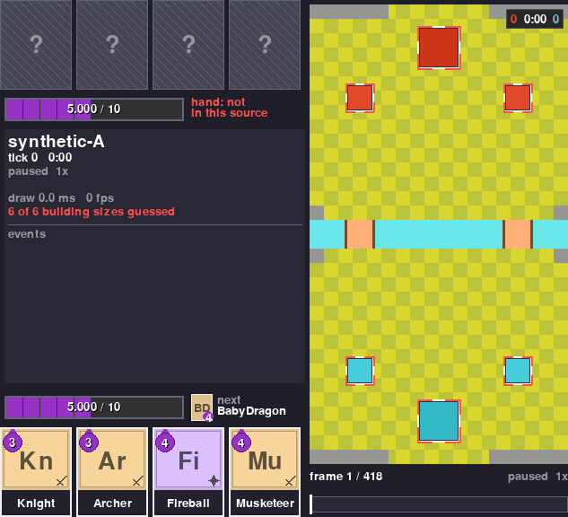 Replay a recorded match Play, pause, step one frame, seek by clicking the bar. The clip is the scripted battle that ships with the tests, so its motion is scripted rather than played by the engine. |
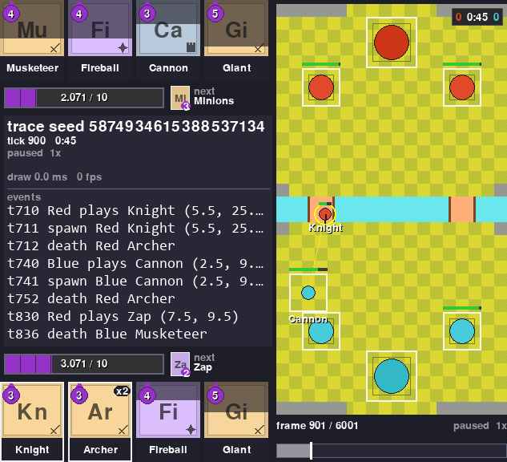 Open an engine trace A battle saved from the engine with one frame per tick. Open it at any tick you like. |
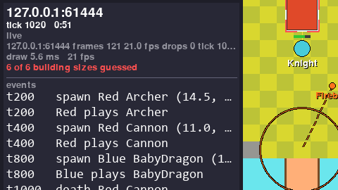 Watch a training run live Attach to a training run in another program. With nobody watching it costs that run 193 ns a step (2026-09-21). |
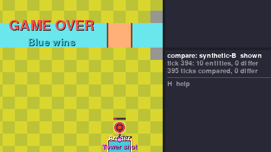 Compare two recordings of one battle Two recordings of one battle should agree, and the viewer says so tick by tick. Here both players recorded the scripted battle that ships with the tests: 395 ticks compared, 0 differ. |
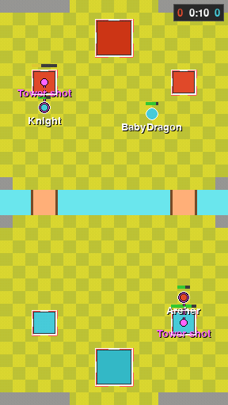 See where they disagree The second source is drawn as hollow ghosts on the first. On a tick where they differ, the ghost steps off the unit. The two recordings in this clip are identical, so nothing steps off here. |
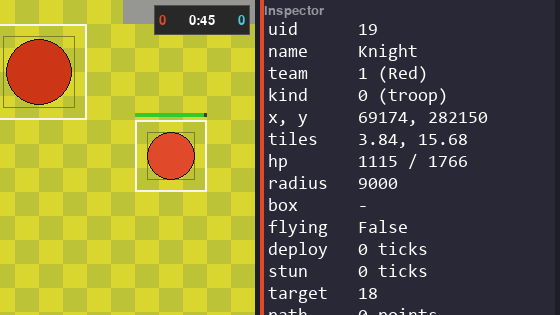 Inspect any unit Click a unit to list every field the source carries, raw and unrounded, except an effect's time left, which shows in tenths of a second. |
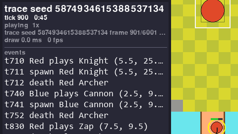 Follow the event log Plays, spawns, deaths and tunnel trips (Miner, Goblin Drill), each with its tick and tile, newest last. |
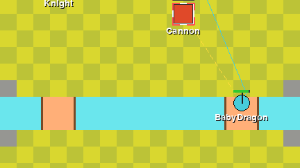 Paths and target lines Recorded units carry the route they walk and the thing they attack. Two keys draw both on the board. Here a Baby Dragon is walking its route while the Cannon aims at it. |
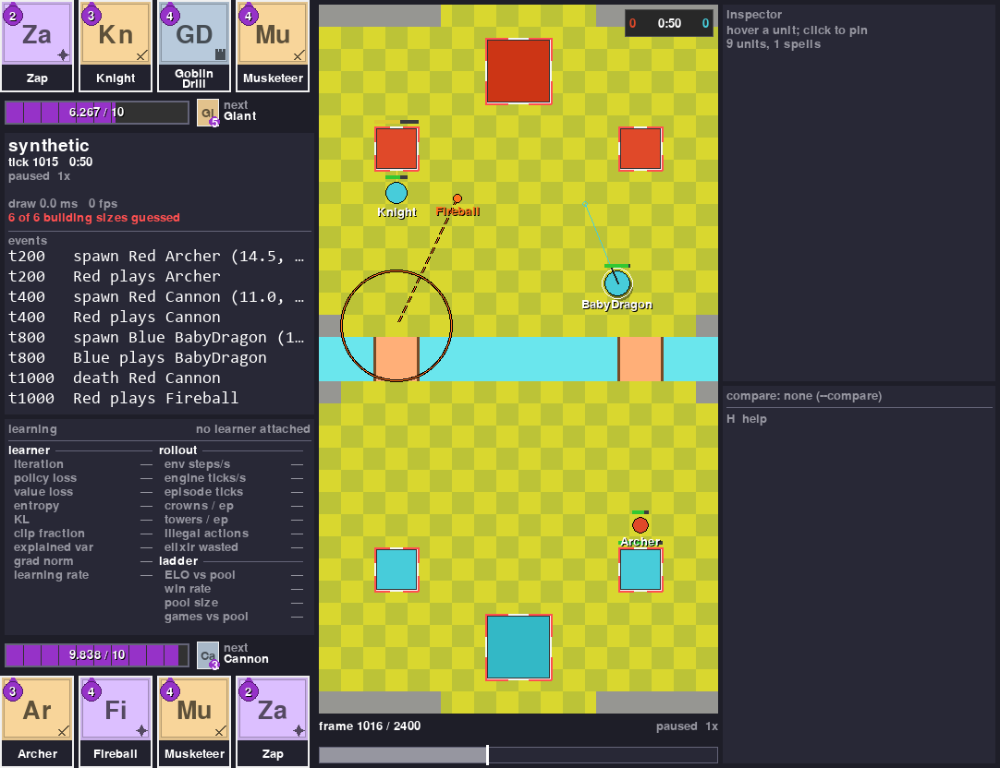 Render with no display Save the window as a PNG with no screen. A scripted battle ships with the tests, so nothing else is needed. |
The cards. Each card in a hand is a tile. Its colour and the mark in its corner say whether it is a troop, a building or a spell. The big letters are its name, and the purple drop is its cost. A card fills in from the bottom as elixir comes in, so you can see how close it is to being played, and its white border appears once it can be played. The next card is the small tile by the elixir bar. Two cards can have the same big letters, like Witch and Wizard. When both are in the deck, the small tile shows other letters for each: Wt and Wz.
Evolutions and heroes. An evolved card gets a dot for each time it was played since its last evolution, and a pink frame with an EVO tag when its next play is the evolution. A hero card wears a gold crown, and its ability button sits next to the elixir bar: gold when it can be used, crossed out once it has been, and grey with the seconds left while it waits. A champion's button works the same way. On the board, an evolved unit gets a pink ring and a hero a gold one. A unit travelling under ground (Miner, Goblin Drill) is a patch of dirt, and an invisible one is faded. The board marks show in every source. The hand marks show when you watch a running battle that has evolutions or heroes, and in a saved trace too: it knows the deck's heroes, and it counts each evolved card's plays again from the battle. A trace saved with RoyaleGym 2f710e8 or later keeps the engine's own rows, ability buttons included; an older one shows no buttons.
Units on one spot. Two units of one team can stand on almost the same spot. Then you only see the one on top, so its name gets a count, like RamRider x2. A Ram Rider's rider sits on its ram. A battle from the engine says so, and there the rider is drawn as a small seat with a white rim on top of its ram. A recording of a real match does not say, so there it shows x2.
Save a picture or a clip¶
You can take a picture of any of this for your own write-up. capture writes what the window
would show straight to a file, with no window, no display and no clock. It is what made the
images on this page. This example opens the recording that came with your clone, so it runs
from the repo folder with nothing else set up. Swap in your own file or an engine trace, which
Saving a battle to a file makes.
from royaleviser.capture import capture
from royaleviser.sources import open_source
capture(open_source("tests/fixtures/frames-synthetic-A.jsonl.gz"), "shot.png",
ticks=(160, 161, 1), scale=24, crop="left")
The whole signature:
capture(source, out, *, ticks=None, scale=24, view=None, crop="full", fps=20,
compare=None, theme=DEFAULT, live_timing=False) -> list[Path]
- The suffix picks the format.
.pngwrites one file per frame, numberedname-0000.pngwhen the range holds more than one..mp4and.gifencode the range atfps. ticksis(start, stop, step)in battle ticks, the clock the window shows, not frame indices. Without it the whole source is captured.cropisfull,board,left, or a rectangle.leftdrops the inspector column.compareghosts a second source at the same tick.viewcarries the seat, the overlays andhover_uid, which pins a unit in the inspector.- The same source and the same arguments give you the same bytes, always. Two numbers move with
the wall clock: the draw time and the frame rate. Both are zero in every capture, and the LIVE
pill is never drawn, because a capture replays a file.
live_timing=Trueadds the source's own status line, which is built from the file, so it is reproducible too. - PNG needs nothing extra. mp4 and gif are encoded by ffmpeg, which comes with the optional
mediaextra.
For a sense of size: the whole scripted battle cropped to left at scale 16, every 8th tick
(ticks=(0, 395, 8)), is a 0.27 MB gif (2026-09-28).
With the rest of the stack¶
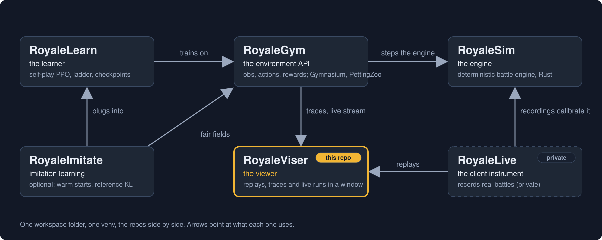
| Repo | What it is | To the viewer |
|---|---|---|
| RoyaleSim | the battle engine, written in Rust. It uses whole numbers only, and the same battle always plays out the same way. Its movement is measured against recordings of real battles | every trace and every stream starts here |
| RoyaleGym | the layer your bot plugs into: what it sees, what it can do, what it gets rewarded for. Gymnasium, PettingZoo and self-play flavours | the only sibling this package imports. It gives the viewer the trace format (royalegym.replay), the engine-side sender (royalegym.viser.ViserPublisher, a publisher in the code) and the shape of the arena |
| RoyaleLearn | the training side: bots playing themselves, PPO (a common training algorithm), a ladder of frozen past opponents, saved checkpoints | a training run streams to the viewer like any other environment |
| RoyaleViser (this repo) | the viewer: recordings, engine traces and running environments, in its own window | the window |
| RoyaleImitate | an optional add-on to RoyaleLearn: config sections that start a bot from saved weights and keep it near a reference policy while it learns | nothing |
| RoyaleLive | private. It records real battles | it writes the recordings the viewer replays and compares |
The split: an environment API on top of an engine, a learner on top of that, and the viewer off in its own process.
What goes in. Three things.
- A recording of a real battle:
frames-*.jsonlor.jsonl.gz, one line of JSON per frame, 20 frames a second. - A trace saved from the engine:
.msgpackor.json, written byroyalegym.replay.ReplayRecorder. - A stream from a program running right now: UDP datagrams from a
ViserPublisher, one per environment step.
What comes out. PNG stills and mp4 or gif clips, the compare totals, and one frame object
(royaleviser.model.Frame) that any other front end can draw from.
The three formats, the rules every frame has to follow and the stream protocol are in
docs/internals.md.
Saving a battle to a file¶
Save a battle from the engine and you can reopen it here later, at any tick. RoyaleGym's
ReplayRecorder writes the file. Pass it frame_every_tick=True and it keeps every single
engine tick instead of one frame per environment step:
import numpy as np
from royalegym import (ClashParallelEnv, RandomLegalOpponent, ReplayRecorder,
RustEngine, StepLimitCondition, save_trace)
rec = ReplayRecorder(frame_every_tick=True)
env = ClashParallelEnv(RustEngine(), # RustEngine: the RoyaleSim engine, from Python
recorder=rec, truncation_cond=StepLimitCondition(200))
obs, _ = env.reset(seed=2026)
rng, opp = np.random.default_rng(0), RandomLegalOpponent(noop_prob=0.3)
while env.agents:
obs, *_ = env.step({a: opp.act(obs[a], obs[a]["action_mask"], rng) for a in env.agents})
save_trace(rec.trace, "battle.msgpack") # 200 steps -> 2001 frames, one per tick
200 steps of the environment turn into 2001 frames, one per tick.
Watching a run that is happening now¶
A running environment sends frames out instead of writing a file. Set one environment variable and change no code, or hand it a sender yourself. Then attach from another program.
Nothing is sent until a viewer says hello. Sending stops three seconds after the last viewer goes away. So you can leave this switched on in a training run you are not watching.
Three things happen, in three different places. First, in the shell where the training run will start and before it starts, name the address the frames go to. In PowerShell:
In cmd it is set ROYALEVISER=127.0.0.1:9870. On macOS and Linux it is
export ROYALEVISER=127.0.0.1:9870. A set line typed into PowerShell or bash sets nothing, and
the viewer then waits for frames that never come.
The vectorised environment reads that when you build it. It binds one publisher and watches game 0. None of your own code changes. Frames only go out while the environment steps, so something has to step it: your training loop does. This stand-in plays random legal moves in eight games on the engine:
import numpy as np
from royalegym import ClashParallelEnv, ClashSelfPlayVecEnv, RustEngine
env = ClashSelfPlayVecEnv(8, lambda: ClashParallelEnv(RustEngine()))
env.reset(seed=0)
rng = np.random.default_rng(0)
for _ in range(2000):
masks = env.action_masks()
env.step([rng.choice(np.flatnonzero(m)) for m in masks])
It ran for 87 seconds on a busy machine on 2026-09-28, which is time enough to attach the viewer.
Leave out the lambda and the games run on MockEngine, the pure-Python stand-in, with a
warning that no engine was chosen.
Then, in another process, attach the viewer to that same address:
A viewer shows one battle at a time. When you run eight games at once, something has to pick
which one. So the vectorised environment is the thing that reads ROYALEVISER: it opens the
sender once and hands it to game 0. Eight games all reaching for the viewer's one UDP port is an
error, not eight streams.
9870 is a default, not the address. One run holds that port while it streams, so a second run
on the same machine needs its own: ROYALEVISER=127.0.0.1:9872, and a viewer pointed at the same
number. A second run started on a port that is taken stops with an OSError as soon as it
builds the environment. The message says the port is already in use, almost always by another
run of yours, and tells you to pick another one.
A single environment reads no environment variable of its own. You hand it a sender directly.
ViserPublisher comes from royalegym.viser, and on its own it sends to 127.0.0.1:9870:
from royalegym import ClashParallelEnv, RustEngine
from royalegym.viser import ViserPublisher
env = ClashParallelEnv(RustEngine(), viser=ViserPublisher())
While a viewer is attached, one msgpack datagram goes out per engine tick. Measured on
2026-09-20 on MockEngine, the pure-Python stand-in, not the Rust engine above: 2.6 KB for 18 units (12 troops and the 6 towers, which are units of their own kind,
not a list beside them), and 11 KB for 60. Since 2026-09-24 each unit also carries its target
and the effects on it, and each frame carries the shots in flight, so a datagram is bigger now.
It has not been measured again.
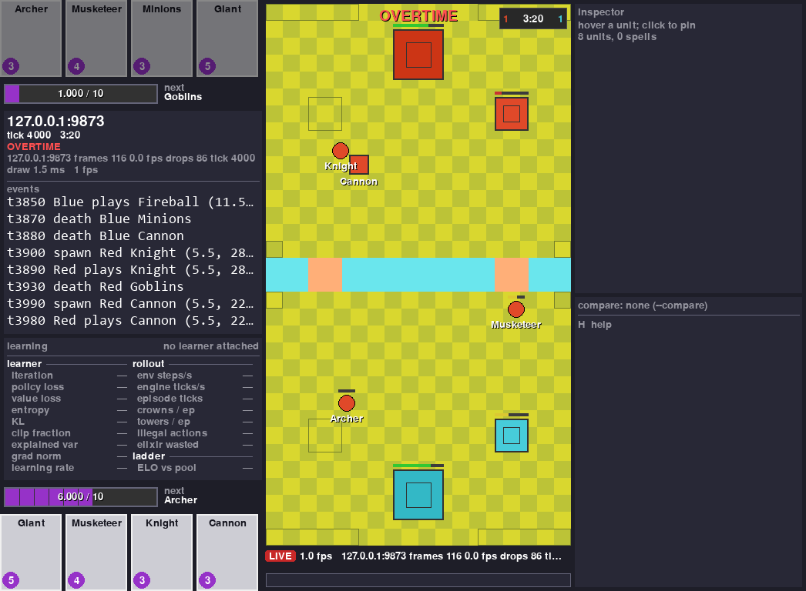
That is a real stream, not the scripted battle. Another process is stepping four self-play battles on the engine and publishing game 0, and everything in the window arrived over the socket.
Two things in it are worth reading, and both are properties rather than measurements. The learner panel is empty because nothing was training when the shot was taken. And the status line admits dropped frames: the viewer drops them rather than slowing the environment down, which is the trade it is built to make, and it tells you when it has. On the occasion this shot was taken, with four other jobs running, that was 86 frames of 116.
Showing your training numbers next to the battle¶
The learner can report too, on its own port, and the panel in the dashboard fills in:
import time
from royaleviser.model import Learning
from royaleviser.sources import LearningPublisher
learner = LearningPublisher() # 127.0.0.1:9871, the stream's port plus one
for it in range(60):
time.sleep(1) # your rollout and optimise step go here
learner.publish(Learning(run="ppo-0007", iteration=it, policy_loss=0.0241, elo=1183))
Run it, then attach a viewer from another window with --stream 127.0.0.1:9870. The panel
fills within a second or two, and its iteration counts up once a second.
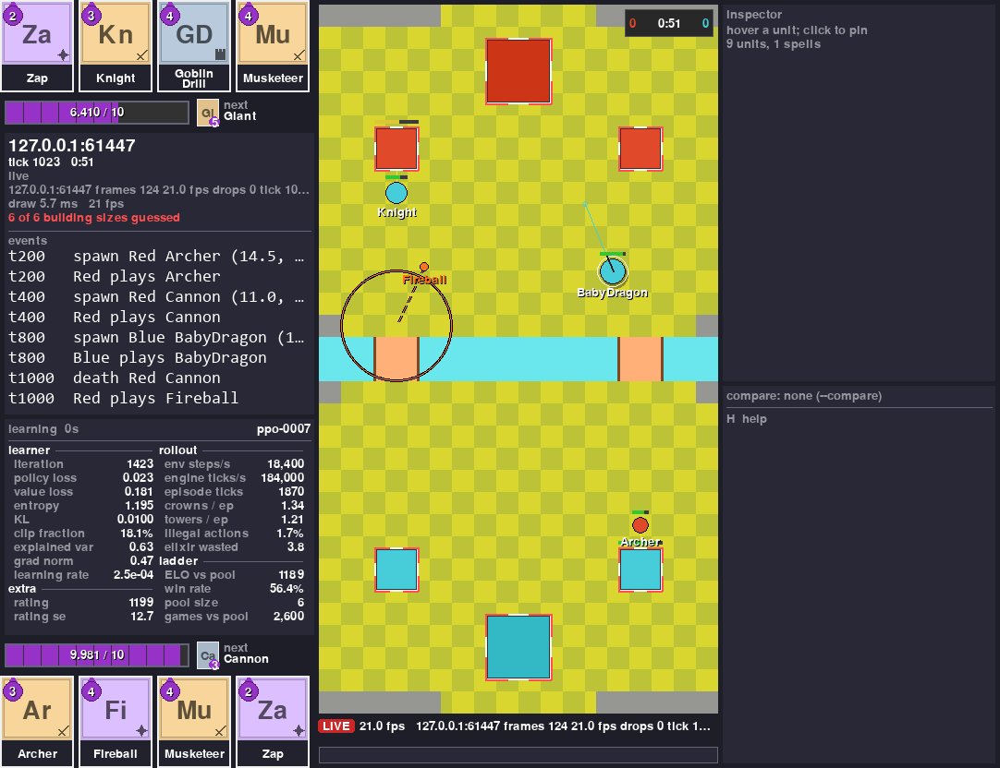
That is the same window on a live battle. The panel under the event log is the learner's, and every number in it arrived over the network. The numbers in this picture come from a script, not from a real learner.
It is sent separately from the battle frames and on its own clock, once per training iteration rather than once per step. So it keeps updating while the learner is busy and nothing on the board is moving. A viewer that attaches in the middle of a run is sent the last status right away, instead of waiting for the next iteration.
The heading shows how long ago the last status arrived. On a real run the board stands still while the learner trains, and that age is how you tell a slow run from a dead one.
One message is the whole status. That is the contract, not a matter of taste: the viewer replaces what it is holding rather than merging the new message into the old one, so the panel never shows a mixture the learner never sent at one moment.
A field your learner does not send shows a dash. The panel never puts a zero there. Nobody reported that number, so it does not pretend one.
Anything the twenty fixed rows cannot hold goes in Learning.extra, which is {name: number or
string}, drawn underneath in the order you sent it.
If you would rather your learner did not import this package, it can send the same small msgpack
datagram itself. The format and the six constants it has to match are in
docs/internals.md.
Setup¶
Installed with pip install "royalegym[all]"? You already have royaleviser. Skip this
section: the clones, the virtual environment and Rust below are only for working on the viewer
itself.
The whole stack shares one setup. The repos sit side by side in one folder, with one virtual environment at its root. You do not need all of it to use the viewer, so it comes in two parts.
The short way, for the viewer on its own. No Rust, no engine build, no game files. You need Python 3.12 or newer and git. Run these from wherever you keep your projects, one line at a time:
mkdir Royale
cd Royale
git clone https://github.com/RoyaleGym/RoyaleViser.git
py -3.12 -m venv .venv
.venv\Scripts\python --version
.venv\Scripts\python -m pip install -e RoyaleViser
The venv line asks for Python 3.12 by name. On macOS and Linux it is python3.12 -m venv .venv.
If python --version already prints 3.12 or newer, python -m venv .venv works too. The version
line must print 3.12 or newer before you go on. With an older Python, pip refuses the install
line.
The last line downloads pygame-ce, msgspec and numpy, which is a few tens of MB. You now have the two recordings that ship with the tests, and the board is drawn from a copy of the arena built into this package. That is enough for Try it, for streams, and for saving a PNG.
The rest of the stack, if you want to open an engine trace or record one yourself. Do the
short way first, because the rest builds on the folder, the environment and the clone it made.
The engine is Rust, so this part also needs a Rust toolchain from rustup.rs.
Add the other three clones and the build tools, from the Royale folder:
git clone https://github.com/RoyaleGym/RoyaleSim.git
git clone https://github.com/RoyaleGym/RoyaleGym.git
git clone https://github.com/RoyaleGym/RoyaleLearn.git
.venv\Scripts\python -m pip install maturin pytest hypothesis ruff numpy msgspec
Next, generate the card and arena data the engine reads, in RoyaleSim/data/derived/. The
engine cannot start without it. A clone carries only cards-15.535.json in data/derived/;
these lines generate the rest. The copy line is the important one: cards-15.535.json is the
table the engine loads. The extract_cards.py --vintage 2018 line still runs, building the older
table beside it for the cross-engine comparisons that use it. On macOS and Linux the copy is
cp data/derived/cards-15.535.json data/derived/cards.json.
cd RoyaleSim
..\.venv\Scripts\python tools\extract_arena.py
..\.venv\Scripts\python tools\extract_cards.py --vintage 2018
Copy-Item data\derived\cards-15.535.json data\derived\cards.json
..\.venv\Scripts\python tools\extract_globals.py
Then build the engine into the environment, from that same RoyaleSim folder. Give it a few
minutes and some free memory. It can go quiet for a minute or more on the engine itself; let it
finish:
Then install the Python packages, back in the Royale folder:
.venv\Scripts\python -m pip install -e RoyaleGym
.venv\Scripts\python -m pip install -e RoyaleViser
.venv\Scripts\python -m pip install -e RoyaleLearn
One more line, only if you want to train. It is a big download:
Here is what each piece of the viewer needs.
- Recordings, streams and the scripted battle need only the virtual environment and
pip install -e RoyaleViser. That pulls in pygame-ce, msgspec and numpy. Without RoyaleGym the board is drawn from a copy of the arena built into this package. - Opening a trace needs RoyaleGym as well. RoyaleGym then reads the arena out of the
RoyaleSim checkout (
data/derived/, which theextract_*lines above generate), not out of the engine build. - Recording a trace yourself needs the engine build too, so you need the whole recipe.
- mp4 and gif out of
captureneed themediaextra, which brings ffmpeg with it. A PNG needs nothing beyond this package.
Status¶
The test badge is a clone's run at 500ae04, measured with ROYALELIVE_REPORTS pointed at
an empty folder. On a machine that has the recordings the same pytest run is 372 passed, 1 skipped.
As of 2026-09-22, this works end to end:
- Replaying a recording, and comparing two recordings of one battle. The pair that ships with the tests gives 395 ticks compared, 0 differ.
- Drawing a building at the size the source says it stands on. When a source does not carry that size, the viewer marks what it drew rather than guessing quietly: red corner ticks and a count of how many sizes on screen are guesses. Since 2026-09-22 frames and traces carry the size, so a Cannon is the 3 by 3 building it is in the game, and the marking is there for older files and for sources that do not carry one.
- A building is drawn as two shapes, because it has two different sizes and they are easy to confuse. The box is the ground it stands on. A new building only goes where its whole box fits, so one tapped too close to another is moved to a spot nearby where it does. The circle inside is its collision radius, which is what other units bump into. On the engine a Cannon stands on 3 tiles with a radius of 0.6 of a tile, a princess tower 3 and 1.0, and a king tower 4 and 1.4 (2026-09-22). A source that carries no radius gets no circle rather than a guessed one.
- Traces from the engine. A 2001-frame self-play trace draws, and every frame of it passes the viewer's own consistency check.
- Streaming from a running environment. A stream carries one frame per engine tick. On 2026-09-24 a 3,728-tick battle, slowed to about 20 seconds so a person could watch it, sent 3,528 frames, none of them dropped for being too big to send. The viewer's own count of frames lost on the way was not read. The viewer was open before the battle started. The missing first second is the time the run took to hear the viewer's hello, since nothing is sent before that.
- The learning panel. A learner's status reaches the viewer on its own port, whole in one message, and is re-sent to a viewer that attaches in the middle of a run.
- Saving a picture or a clip to a file with no window, no display and no clock.
- Effects, spells and shots (2026-09-24). A frozen, stunned, poisoned, slowed or raging unit
wears a mark of its own. A heal or a shield gets a small sign in its corner. A spell the
viewer knows is drawn in its family's shape at its card's size. A shot looks like what fired
it: an arrow, a bullet or a ball. A crown tower's shot is a dot with a white core. The effect
marks and the shots need a trace or a stream from an engine and a RoyaleGym of 2026-09-24 or
later. With an older RoyaleGym a trace still opens, but without its shots, its targets and
every effect except a stun, and nothing says so. What every mark means is in
docs/internals.md. - Every draw redraws the whole window and takes 2-5 ms at 24 pixels per tile. A replay needs 20 a second, so that is far inside budget. That is why the viewer is Python and pygame and not a Rust program.
Known gaps. Every one of these is a source not carrying the information. None of them is the window refusing to draw something.
- A recording gives no unit a radius and no flying flag. So every unit is drawn at one default size, and air units look like ground units.
- A trace or a stream gives no unit a path, so the path overlay draws nothing for them. Since 2026-09-24 they do carry what each unit is attacking, so the target overlay draws. A trace saved before then, or an engine or RoyaleGym older than that, gives no targets.
- Spells in a recording come through as projectiles, plus the few whose effect is tagged with its card (Fireball, Arrows, Rocket, Log, Barbarian Barrel). There are no rage, poison or freeze zones.
- A recording holds only the recording player's hand. The opponent's shows as "hand: not in this source" until the results screen. A trace's cycle past the revealed cards shows as "next ?".
A clone of THIS REPO ALONE, installed the short way, runs pytest -q to 285 passed and 15
skipped (CI at adc2450, 2026-09-28, the same on Windows and Linux): the tests that need a
sibling package skip and each says so. That figure is CI's, from a runner that has nothing but
this repo, because this project's development machine has every sibling repo installed and cannot
produce it -- measured there it gives a different pair, which is a different machine wearing the
same name. CI installs the media extra as well. Without it one more test skips, so the short
way on its own gives 284 passed and 16 skipped. The counts below are for a machine with the rest of
the stack. Until 2026-09-23 that case could not collect the suite at all, which nothing had ever
run.
Tests. Start in the Royale folder. On a clone with the media extra installed, the first line
prints 369 passed, 4 skipped (2026-10-01, 500ae04). Without the extra, which Setup does not
install, it prints 368 passed, 5 skipped (2026-10-01, 500ae04). The second line prints
All checks passed!. Both tools come from the
pip install maturin pytest hypothesis ruff numpy msgspec line in Setup, so the short
way on its own does not have them:
cd RoyaleViser
..\.venv\Scripts\python -m pytest -q
..\.venv\Scripts\python -m ruff check royaleviser tests
Three of those skips are tests that pin numbers only a recording of a real battle has. Those recordings are private, so your clone does not have them, and the run prints "SKIPPED, NOT PASSED" for each one so nobody mistakes a skip for a pass. The fourth needs a parity results file from RoyaleSim's replay harness. On the machine that has the recordings, the first three run and the count is 372 passed, 1 skipped.
Without the media extra (imageio-ffmpeg), the mp4 and gif test skips as well, and it says so.
Install it with .venv\Scripts\python -m pip install -e "RoyaleViser[media]" from the Royale
folder. A PNG needs nothing extra.
Read next: docs/internals.md for the frame model, the recording format,
the stream protocol, the command line, the layout, the tests and the performance table;
RoyaleGym for the trace format and the sender that
streams to the viewer; RoyaleSim for the engine the
traces come from.
Community¶
Viewer feedback, recording formats and rendering work happen in the project's Discord: https://discord.gg/4D2BS5JBHP
Issues and pull requests on this repo are welcome too.